吉他和弦：按的姿勢會有影響?!
吉他初學者，在練習按壓開放和弦（Open Chord）時，常會按不好，發出「滋..」的雜音，或者「悶」的聲音，這通常是因為按弦的姿勢不佳所導致的。這樣彈奏給別人聽時，對方也會覺得你吉他的聲音好像怪怪的。
所以彈吉他時，請特別注意自己有沒有這個問題，隨時調整自己的手指姿勢，以下提出幾種初學者常見的錯誤按弦方式：
吉他和弦：錯誤的姿勢
1. 不夠靠近琴衍
這是很多初學常犯的錯誤，要記得手指要盡量靠近琴衍（Fretwire），這是壓弦最省力的方式。如果手指按在中間也不太好，靠左邊也容易「壓不緊」而發出「滋...」的雜音。例如：C 和弦
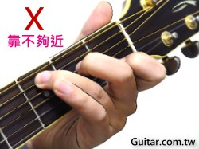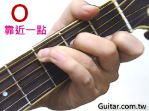
2. 靠在琴衍上
如果靠在琴衍上或太超過琴衍都不行，吉他會容易發出「悶悶」的聲音，這樣吉他的聲音就不乾淨了。例如：A7 和弦
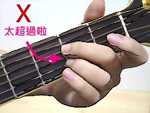
3. 左手沒有支撐點
按開放和弦（Open Chord）的時候，「左手食指根部」可以輕靠琴頸下緣，作為整個手掌的支撐點，穩定壓弦的手指。雖然手掌容易碰到第一弦，但只要調整一下角度就好了。若 左手沒有支撐點，在轉換和弦時很容易發生失誤。下面四張圖，可以看出手指壓和弦的差異性，多比較看看差在哪裡~
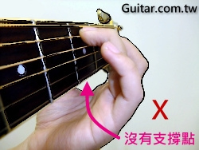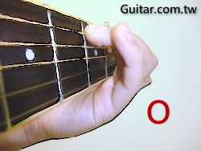
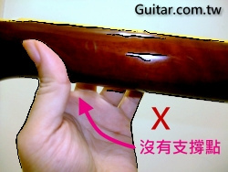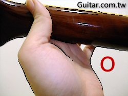
4. 碰觸到其他弦
手指指肉碰觸到其他的弦，也是吉他新手常常會犯的錯誤，這時候就要注意調整一下指尖的角度。
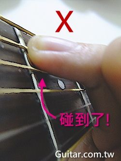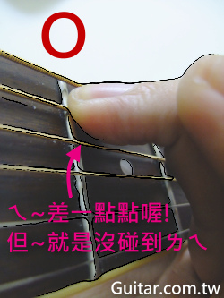
5. 左手指甲剪不乾淨
指甲剪不乾淨也會導致按弦姿勢不好調整，容易使手指平躺，以至於按到其他弦
吉他和弦：正確的姿勢
1. 指尖角度
如上圖所示，只要以不會碰觸到其他弦為原則即可，沒有一定要每根手指都 90度垂直於指板，有些和弦不一定需要這樣。若是指尖的肉比較厚的人 (1)可能初期會比較辛苦一點，這時手指就要盡量翹起，指肉不要碰觸到下方的弦，多加練習不同的角度跟位置，找出不會碰到其他弦的姿勢，放開之後再重壓，反覆練習，習慣之後就不會一直碰到其他弦了。
2. 合理配置手指
沒有怎麼壓才算正確，但也不能隨便亂壓，如果過於勉強手指也是不好。所以盡量要合理化配置手指，來壓好和弦，避免過於勉強的壓法。
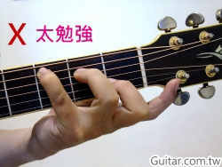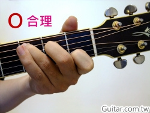
3. 大拇指的位置
只要左手食指根部輕靠琴頸下緣，大致上就可以穩定。手指較長的人，還可以試著將大拇指放置在琴頸上緣，握住整支琴頸，除了增加穩定度以外，若和弦圖第六弦是打X的，還可以順便悶住。當然如果手指不夠長，放置再琴頸後方也是OK的。
5. 手指與琴頸呈斜角
手指須與琴頸呈斜角，而不是90度。這樣可以幫助手指有更大的靈活運用範圍，也不會使手指在壓弦時變的很僵硬。最簡單的方法，就是只要「讓你的指甲面對你」就可以辦到了喔^^
 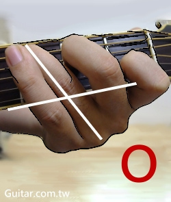
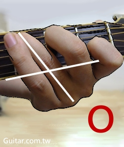
6. 悶掉不該發出聲音的弦
這應該是最多人會忽略到的點，也是「刷和弦」時最常犯的錯誤，如果吉他圖表出現 X 表示：那條空弦－非和弦組成音，不能彈到。X 最常出現在第6弦（最粗）或第1弦（最細），第6弦，可以用大拇指悶住，輕觸就好，不要壓；第1弦，可以讓手指稍微的躺平，自然就會悶到了。